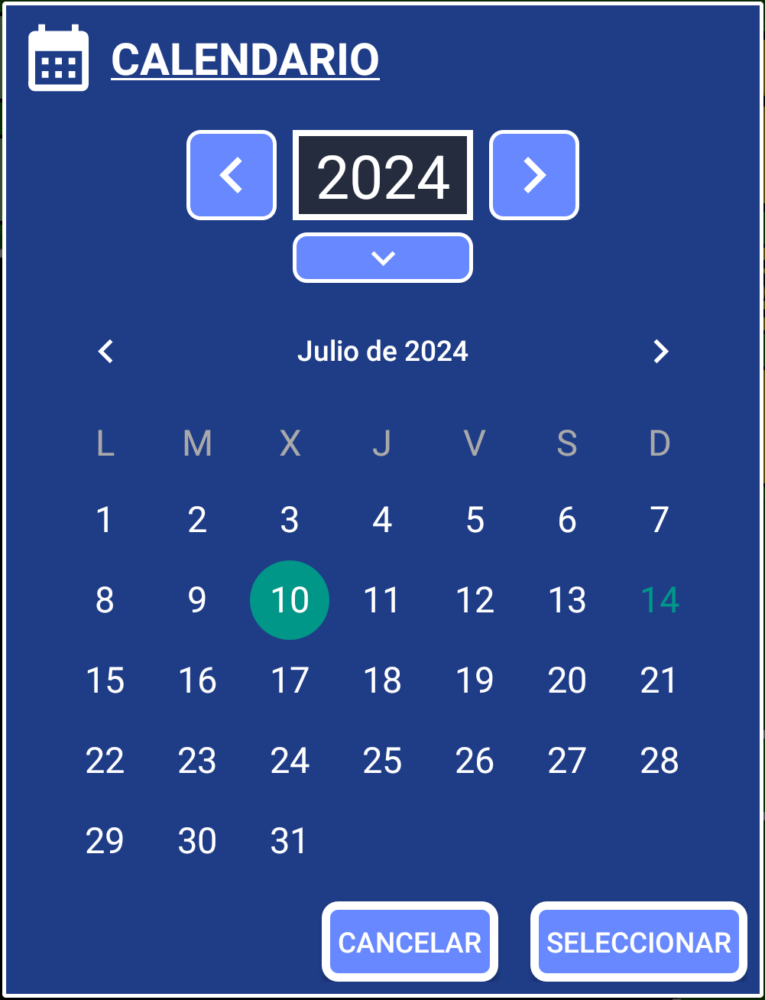

Vamos a crear un registro para anotar un evento que ocurrió en el pasado (también se considera pasado el presente). Puede ser algo que comiste o bebiste, dinero que gastaste recientemente en algo o algo que acaba de suceder y quieres guardar registros de ello.
¿Por qué registrar algo en el pasado? Porque luego puedes usar el sistema de búsqueda para encontrar cuándo sucedió algo, o puedes agrupar registros para sacar conclusiones de ellos. Podrás ver qué comes, cuándo comes, cuándo fue la última vez que comiste, con qué frecuencia comes (como el tiempo entre registros al usar el sistema de búsqueda).
Cuanto más agregues a la aplicación, más aprenderás sobre ti y más fácil será mejorar cada día.
1. Abre SECURElogBook y ve a la ventana principal, con fondo azul:

2. Presiona el botón (I) para agregar un nuevo registro/tarea.
3. Una vez que se abre la ventana del creador (fondo verde), podemos crear nuestro registro/tarea:

La pequeña lista con todos los registros (K) mostrará solo los registros que coinciden o siguen el momento seleccionado por fecha y hora (D y F).
4. Por defecto, la hora del registro está configurada en el presente y la tarea está marcada como no completada. Por eso los botones de registro (H, I, J) están amarillos.
Al crear un registro es útil tener configurada la hora actual configurada como la hora de nuestro registro. Observe que la hora del teléfono es la misma que la de nuestro registro, 21:19. Gracias a eso podemos annadir o restar tiempo de manera facil cuando usamos las ventanas de ayuda para manejar el tiempo.
5. Agrega el texto dentro del cuadro de texto. Si guardas un registro/tarea sin texto, el programa agregará "SIN TEXTO" por defecto.
6. Configura la hora. En SECURElogBook puedes agregar la hora manualmente o usar una ventana. Las casillas de texto (D) se utilizan para agregar las horas (izquierda) y los minutos (derecha). Si prefieres usar la ventana:
Mantén presionado el botón (E) para agregar valores no fijos:

Esta ventana te permitirá agregar valores negativos.
Puedes presionar el botón (C) para establecer el registro con la hora actual.
7. Selecciona la fecha presionando el botón de fecha (F).

Para restar un año al actual, presiona la flecha izquierda. Para sumar un año, presiona la flecha derecha. Para introducir un valor de año, presiona la flecha hacia abajo.
Cada vez que cambies la fecha o la hora, un mensaje te indicará el tiempo entre el presente y la nueva hora establecida. El color de fondo de ese mensaje te ayudará a verificar lo que estás haciendo:
. Negro = pasado.
. Rojo = hoy.
. Azul = mañana.
. Verde = pasado mañana.
Además, el color de fondo de la fecha parpadeará si cambias la fecha.
8. Como estamos registrando un evento que ocurrió, el registro debe establecerse en el pasado. Cuando configuramos nuestro registro en un momento pasado, los botones de registro (H, I, J) se volverán negros para indicar que el registro está en el pasado.
Los registros que pertenecen al pasado no tienen alarmas (negras y amarillas).
Los botones de registro (H, I, J) cambiarán según si un registro está en el futuro o en el pasado. Pero también, si el registro está completado o no.
. Pasado:
Completado
. Futuro:
Completado
El sistema de colores te proporcionará información visual para facilitar las cosas:
. Oscuro = Registros completados.
. Azul = Registros futuros.
. Amarillo = Registros sin completar, que debes revisar lo antes posible.
9. Porque queremos registrar un evento que ocurrió en el pasado, debemos indicar que está completado. Para indicar que el registro está completado, debemos presionar el botón (I) para que los botones de registro (H, I, J) se vuelvan negros.
El color de los botones de registro (H, I, J) es como una vista previa de cómo se verá el registro que estamos creando.
10. Ahora que tenemos un registro negro, podemos guardarlo presionando el botón (H).
11. Si los botones de registro se vuelven rojos, es porque ya hay un registro configurado con esa fecha y hora. Esto significa que no puedes guardar tu registro allí. Este registro con la misma hora será el primero en la lista de registros.
12. Guarda el registro presionando el botón H. Verás un mensaje de confirmación con fondo negro:
. Negro = pasado.
. Rojo = hoy.
. Azul = mañana.
. Verde = pasado mañana.
EJEMPLO DE POSIBLE ERROR: si creaste un registro para registrar un evento en el pasado pero el mensaje de confirmación no era negro, tienes un problema. Porque creaste un registro en el futuro y tendrá una alarma. Siempre puedes presionar el botón (G) en la ventana principal para abrir el último registro guardado y corregir el problema.
¡Felicidades, acabas de guardar tu primer evento!